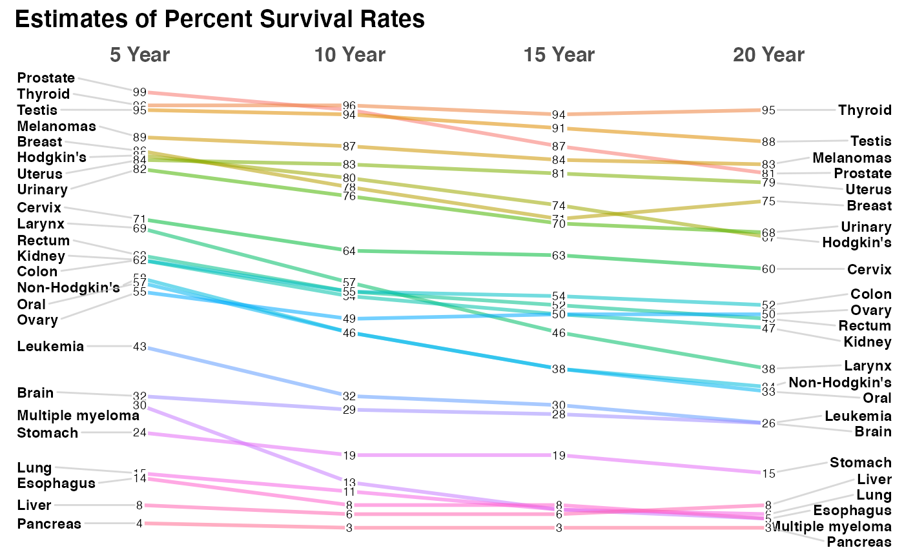
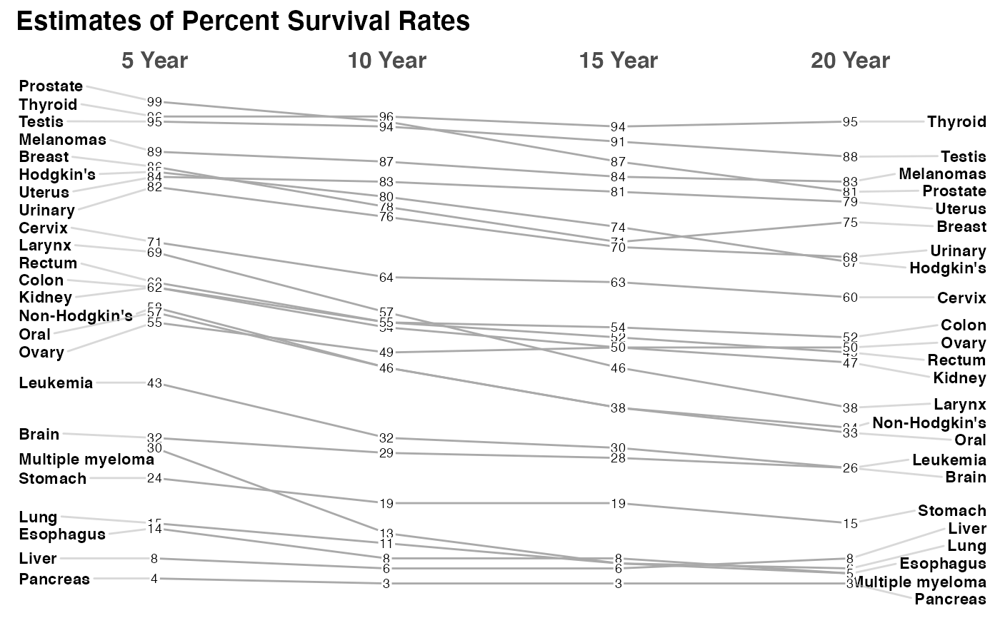
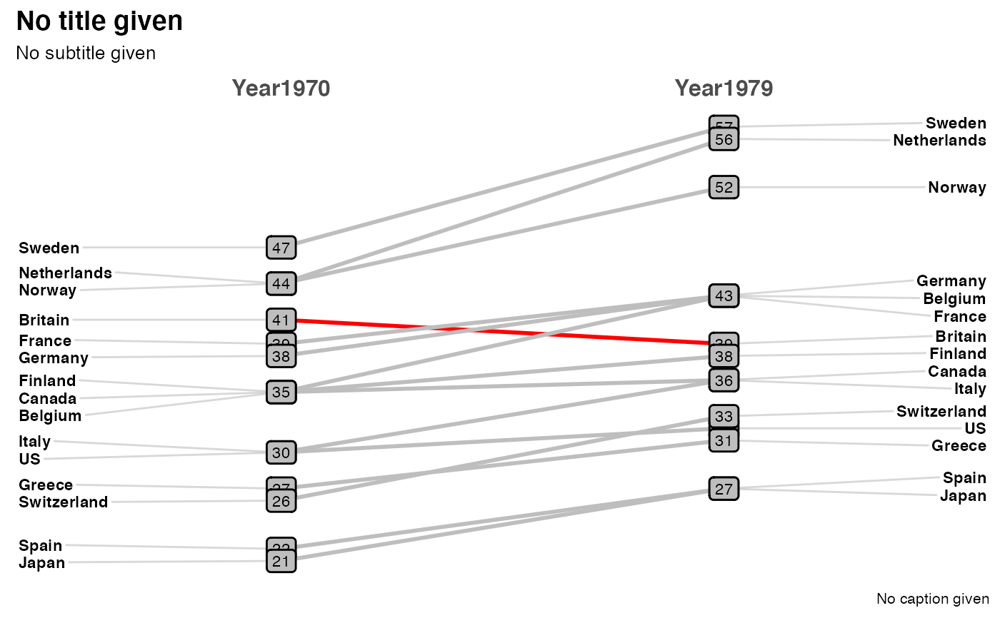

Creates a "slopegraph" as conceptualized by Edward Tufte. Slopegraphs are minimalist and efficient presentations of your data that can simultaneously convey the relative rankings, the actual numeric values, and the changes and directionality of the data over time. Takes a dataframe as input, with three named columns being used to draw the plot. Makes the required adjustments to the ggplot2 parameters and returns the plot.
newggslopegraph(dataframe, Times, Measurement, Grouping, Title = "No title given", SubTitle = "No subtitle given", Caption = "No caption given", XTextSize = 12, YTextSize = 3, TitleTextSize = 14, SubTitleTextSize = 10, CaptionTextSize = 8, TitleJustify = "left", SubTitleJustify = "left", CaptionJustify = "right", LineThickness = 1, LineColor = "ByGroup", DataTextSize = 2.5, DataTextColor = "black", DataLabelPadding = 0.05, DataLabelLineSize = 0, DataLabelFillColor = "white", WiderLabels = FALSE, ReverseYAxis = FALSE, ReverseXAxis = FALSE, RemoveMissing = TRUE, ThemeChoice = "bw")
Arguments
| dataframe | a dataframe or an object that can be coerced to a dataframe.
Basic error checking is performed, to include ensuring that the named columns
exist in the dataframe. See the |
|---|---|
| Times | a column inside the dataframe that will be plotted on the x axis.
Traditionally this is some measure of time. The function accepts a column of class
ordered, factor or character. NOTE if your variable is currently a "date" class
you must convert before using the function with |
| Measurement | a column inside the dataframe that will be plotted on the y axis. Traditionally this is some measure such as a percentage. Currently the function accepts a column of type integer or numeric. The slopegraph will be most effective when the measurements are not too disparate. |
| Grouping | a column inside the dataframe that will be used to group and distinguish measurements. |
| Title | Optionally the title to be displayed. Title = NULL will remove it entirely. Title = "" will provide an empty title but retain the spacing. |
| SubTitle | Optionally the sub-title to be displayed. SubTitle = NULL will remove it entirely. SubTitle = "" will provide and empty title but retain the spacing. |
| Caption | Optionally the caption to be displayed. Caption = NULL will remove it entirely. Caption = "" will provide and empty title but retain the spacing. |
| XTextSize | Optionally the font size for the X axis labels to be displayed. XTextSize = 12 is the default must be a numeric. Note that X & Y axis text are on different scales |
| YTextSize | Optionally the font size for the Y axis labels to be displayed. YTextSize = 3 is the default must be a numeric. Note that X & Y axis text are on different scales |
| TitleTextSize | Optionally the font size for the Title to be displayed. TitleTextSize = 14 is the default must be a numeric. |
| SubTitleTextSize | Optionally the font size for the SubTitle to be displayed. SubTitleTextSize = 10 is the default must be a numeric. |
| CaptionTextSize | Optionally the font size for the Caption to be displayed. CaptionTextSize = 8 is the default must be a numeric. |
| TitleJustify | Justification of title can be either a character "L",
"R" or "C" or use the |
| SubTitleJustify | Justification of subtitle can be either a character "L",
"R" or "C" or use the |
| CaptionJustify | Justification of caption can be either a character "L",
"R" or "C" or use the |
| LineThickness | Optionally the thickness of the plotted lines that connect the data points. LineThickness = 1 is the default must be a numeric. |
| LineColor | Optionally the color of the plotted lines. By default it will use
the ggplot2 color palette for coloring by |
| DataTextSize | Optionally the font size of the plotted data points. DataTextSize = 2.5 is the default must be a numeric. |
| DataTextColor | Optionally the font color of the plotted data points. `"black"` is the default can be either `colors()` or hex value e.g. "#FF00FF". |
| DataLabelPadding | Optionally the amount of space between the plotted data point numbers and the label "box". By default very small = 0.05 to avoid overlap. Must be a numeric. Too large a value will risk "hiding" datapoints. |
| DataLabelLineSize | Optionally how wide a line to plot around the data label box. By default = 0 to have no visible border line around the label. Must be a numeric. |
| DataLabelFillColor | Optionally the fill color or background of the plotted data points. `"white"` is the default can be any of the `colors()` or hex value e.g. "#FF00FF". |
| WiderLabels | logical, set this value to |
| ReverseYAxis | logical, set this value to |
| ReverseXAxis | logical, set this value to |
| RemoveMissing | logical, by default set to |
| ThemeChoice | character, by default set to "bw" the other choices are "ipsum", "econ", "wsj", "gdocs", and "tufte". |
Value
a plot of type ggplot to the default plot device
References
Based on: Edward Tufte, Beautiful Evidence (2006), pages 174-176.
See also
Examples
# the minimum command to generate a plot newggslopegraph(newcancer, Year, Survival, Type)# adding a title which is always recommended newggslopegraph(newcancer, Year, Survival, Type, Title = "Estimates of Percent Survival Rates", SubTitle = NULL, Caption = NULL)# simple formatting changes newggslopegraph(newcancer, Year, Survival, Type, Title = "Estimates of Percent Survival Rates", LineColor = "darkgray", LineThickness = .5, SubTitle = NULL, Caption = NULL)# complex formatting with recycling and wider labels see vignette for more examples newggslopegraph(newcancer, Year, Survival, Type, Title = "Estimates of Percent Survival Rates", SubTitle = "Based on: Edward Tufte, Beautiful Evidence, 174, 176.", Caption = "https://www.edwardtufte.com/bboard/q-and-a-fetch-msg?msg_id=0003nk", LineColor = c("black", "red", "grey"), LineThickness = .5, WiderLabels = TRUE)#> #># not a great example but demonstrating functionality newgdp$rGDP <- round(newgdp$GDP) newggslopegraph(newgdp, Year, rGDP, Country, LineColor = c(rep("grey", 3), "red", rep("grey", 11)), DataTextSize = 3, DataLabelFillColor = "gray", DataLabelPadding = .2, DataLabelLineSize = .5)